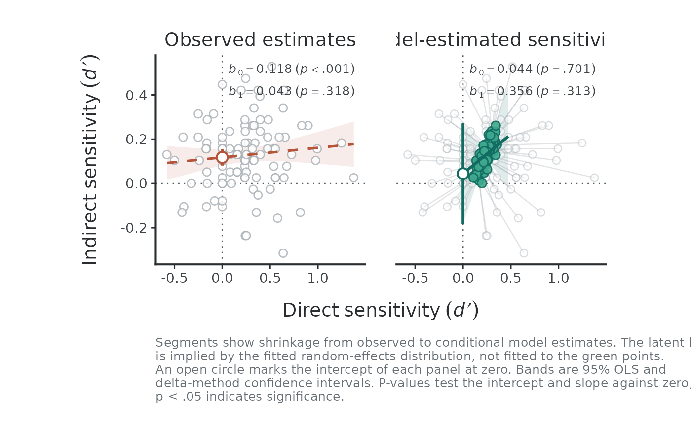
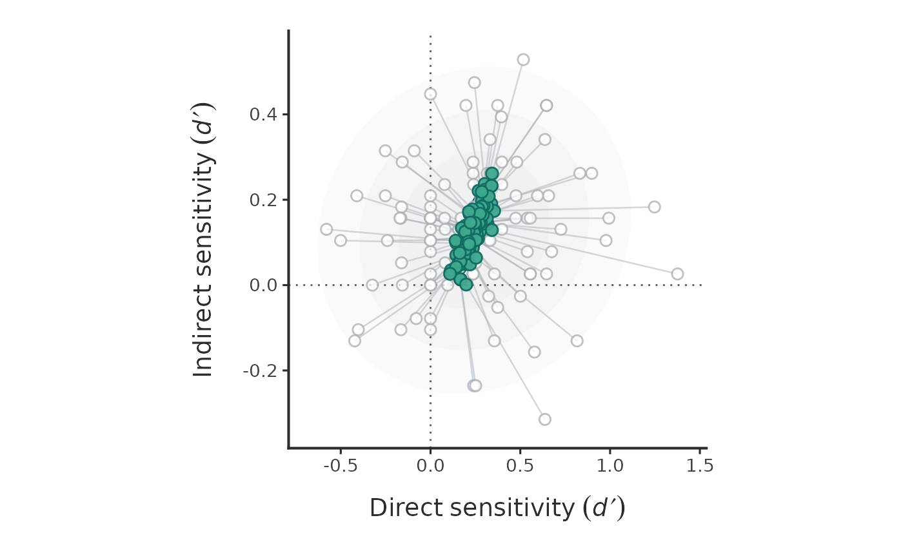
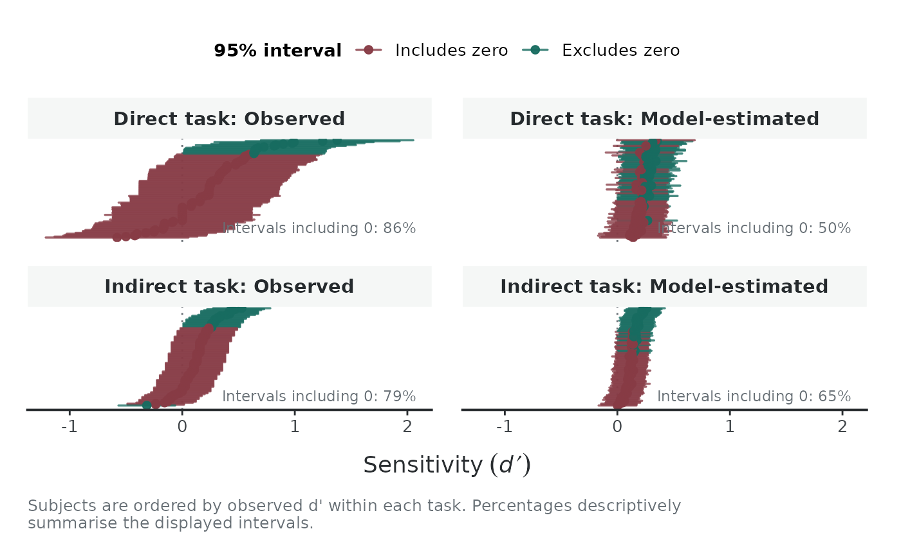
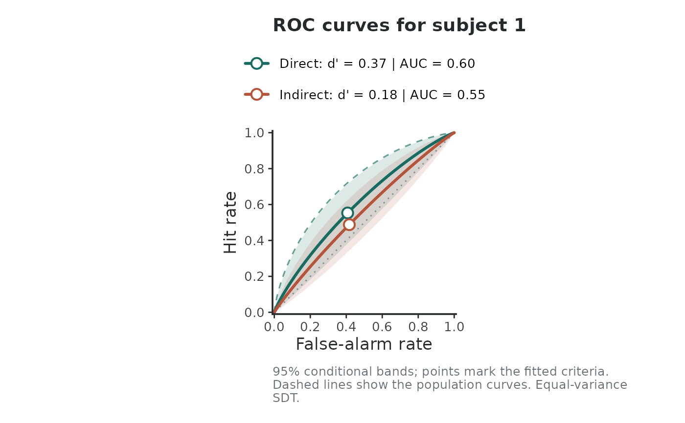
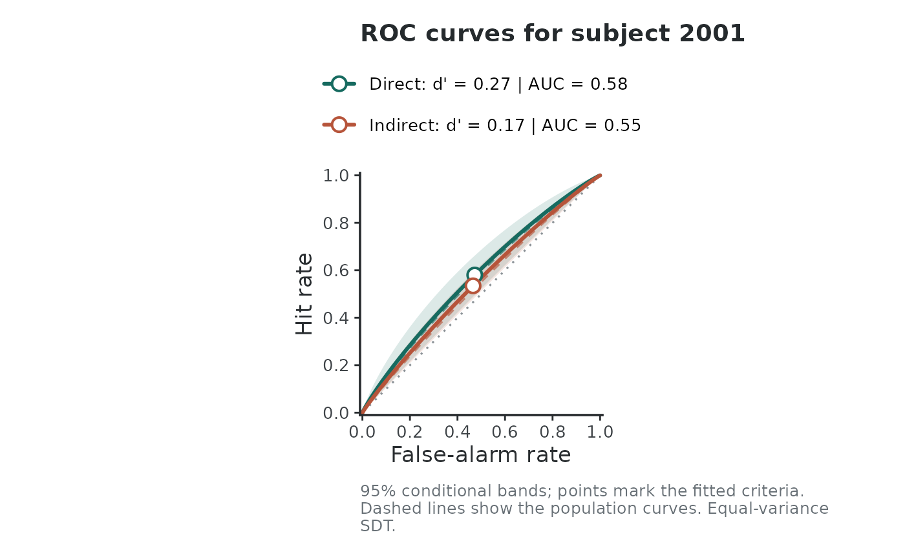

Generates diagnostic visualizations for a fitted hierarchical SDT model, including observed versus latent regression (H3), shrinkage patterns, participant-level caterpillar intervals, and model-implied ROC curves.
Arguments
- x
An
hsdtobject fitted byhsdt().- type
Character string indicating the plot type:
"regression": Compares the observed OLS regression with the latent regression line (H3)."shrinkage": Connects observed \(d'\) to model-implied \(d'\) for each participant across bivariate contours."caterpillar": Compares observed \(d'\) and model-implied \(d'\) with confidence intervals for each participant alongside zero."roc": Shows model-implied ROC curves with estimated criteria.
- subject_id
Identifier for a specific participant when
type = "roc". If omitted, displays population-level curves.- band
Logical. Show confidence bands around regression lines or ROC curves (default is
TRUE).- population_reference
Logical. When plotting an individual ROC curve, add population-average curves as dashed reference lines.
- observed_se
Variance formulation for empirical intervals in
"caterpillar"plots:"gg"(Gourevitch & Galanter, 1967, default) or"miller"(Miller, 1996).- ...
Additional arguments passed to underlying plotting methods.
Regression plot (type = "regression")
Compares observed and latent associations across two panels sharing axes.
The left panel shows observed \(d'\) values and an ordinary least-squares
line. When direct task reliability is low, trial-level sampling noise
attenuates this observed slope toward zero. The right panel plots the latent
regression line (\(d'_I\) on \(d'_D\)) from H3, correcting for
measurement error. The value of this line at \(d'_D = 0\) marks the
intercept testing for unconscious processing. Confidence bands are computed
via the delta method or bootstrap replicates when usdt_boot() is present.
Shrinkage plot (type = "shrinkage")
Connects each participant's observed \(d'\) (from sdt_moments() with Hautus
correction) to their model-implied \(d'\). The lower the reliability of the
measures, the higher the shrinkage of observed estimates toward the
group-level mean.
Caterpillar plot (type = "caterpillar")
Plots observed \(d'\) and model-implied \(d'\) with confidence intervals
for every participant. Empirical intervals use normal approximations based
on observed_se. Model-implied intervals incorporate uncertainty from
population means, variance components, and participant random effects.
ROC plot (type = "roc")
Displays model-implied ROC curves for an average participant or a specific individual, with points marking the estimated response criteria.
Examples
# \donttest{
# Contextual cuing data from Vadillo et al. (2025)
d <- usdt_data_tasks(
direct = vadillo_awareness,
indirect = vadillo_cuing,
subject_col = "subj",
condition_col = "condition",
condition_levels = c(signal = "old", noise = "new"),
response_col = list(direct = "judged.old", indirect = "rt"),
response_levels = list(direct = c(signal = 1, noise = 0),
indirect = c(signal = "faster", noise = "slower")),
dichotomize = list(direct = FALSE, indirect = TRUE)
)
fit <- hsdt(d)
# 1. Observed vs. latent regression (H3)
plot(fit, type = "regression")

# 2. Bivariate shrinkage toward the group mean
plot(fit, type = "shrinkage")

# 3. Participant-level intervals (observed vs. model-implied)
plot(fit, type = "caterpillar")

# 4. Model-implied ROC curves
plot(fit, type = "roc")

plot(fit, type = "roc", subject_id = "2001", population_reference = TRUE)

# }